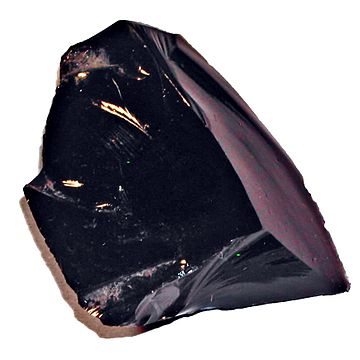

1 + 12Quarto enables you to weave together content and executable code into a finished document. To learn more about Quarto see https://quarto.org.
When you click the Render button a document will be generated that includes both content and the output of embedded code. You can embed code like this:
파이썬 코드 청크는 다음과 같은 단축키를 통해서 넣을 수 있음.
Ctrl + Alt + I2가지 종류가 있음
백틱 뒤에 {python}을 붙여주면 됨.
1 + 12옵션은 #|로 시작함.
echo 옵션: 코드를 문서에 보여줌eval 옵션: 코드를 돌릴 것인가, 그냥 둘 것인가를 결정1+12문장안에 숫자 \(5^2\)를 넣어보자.
여러숫자들을 따로 떼어 표시하자.
\[ \sqrt[5]{2}^{3} \]
You can add options to executable code like this
4The echo: false option disables the printing of code (only output is displayed).
굵은 텍스트
굵은 텍스트
이탤릭 텍스트
기울임 텍스트
취소선 텍스트자나

아 집에 가고 싶다.
- 라고 누군가가 말했다, 2024
인라인 코드: ‘print(“Hello, World!”)’
코드 블록:
def greet():
print("Hello, World!")이것은 간단한 각주1입니다.
두번째 각주 경우2입니다.
이것은 이름이 지정된 각주3.
[!note] 이것만 알아두세요! 옵시디언은 정말 편한 도구입니다.
옵시디언은 정말 편한 도구입니다.